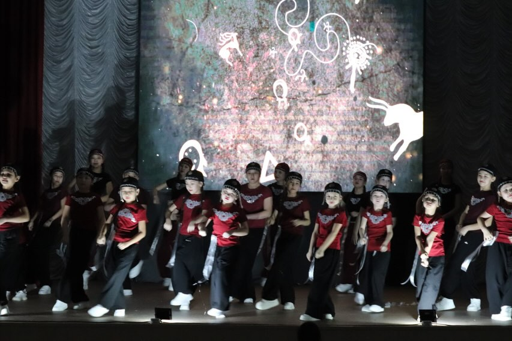
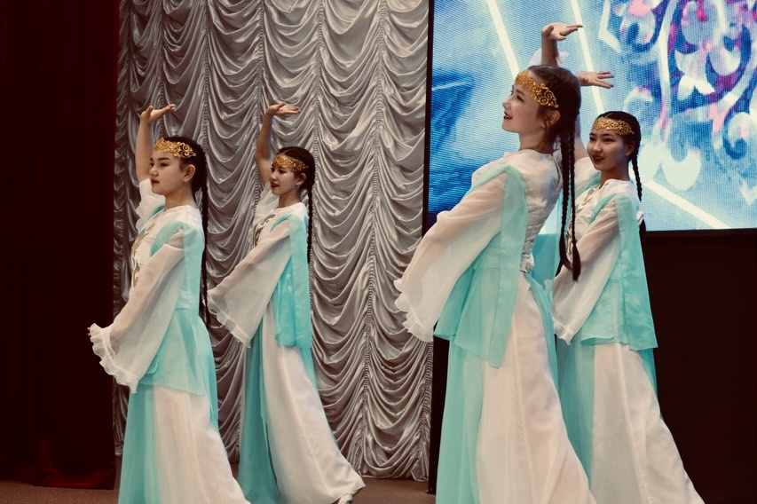
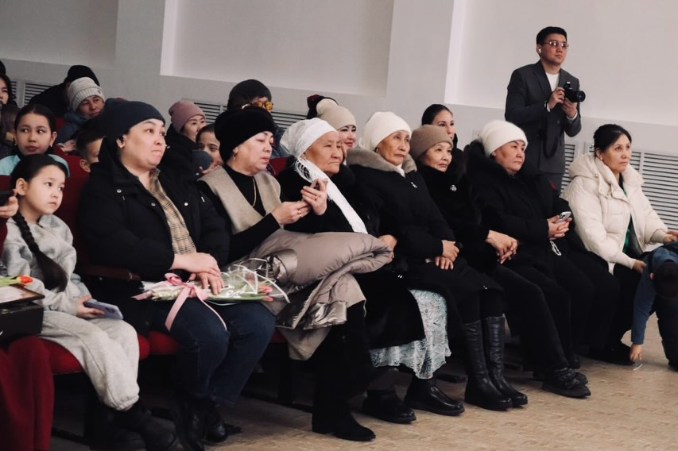
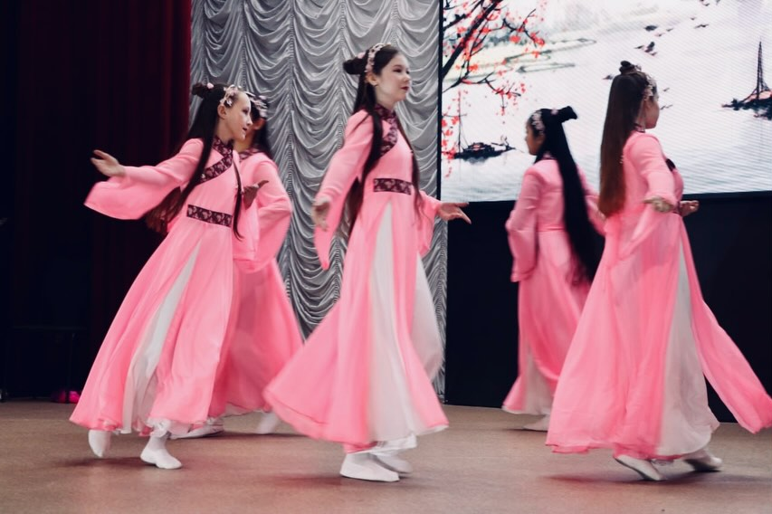

Репортажная фото- и видеосъёмка концертов, школьных мероприятий, выпускных и корпоративов. Фиксируем атмосферу и эмоции в динамике.
Создание визуального контента для бизнеса: мероприятия, презентации, тимбилдинги и брендовые события.
Индивидуальные и групповые съёмки, выпускные альбомы, студийные и выездные проекты для школ.
Портретные, творческие и lifestyle фотосессии с акцентом на стиль и индивидуальность человека.
Профессиональная постобработка: монтаж, цветокоррекция, работа со звуком и динамикой видео.
Создание коротких видео, Reels и фото-контента для Instagram, TikTok и брендов.
Профессиональная ретушь и цветокоррекция фотографий. Мы доводим каждый кадр до чистого, эстетичного и “премиального” визуального результата без потери естественности.




K-STUDIO — это современная фото- и видеопродакшн студия, которая создаёт визуальные истории событий любого масштаба. Мы работаем на пересечении креатива, эмоций и технологий, превращая обычные моменты в качественный визуальный контент.
Наша цель — не просто съёмка, а создание полноценного медиа-продукта, который передаёт атмосферу, динамику и настроение каждого события.
Мы используем полный цикл производства: разработка идеи, съёмка, постановка кадра, монтаж и финальная визуальная обработка. Такой подход позволяет нам контролировать качество на каждом этапе.
В работе мы сочетаем репортажный стиль и режиссуру, что даёт живой, динамичный и при этом эстетически выстроенный результат.
Кирилл Панасенко — основатель K-STUDIO, мультидисциплинарный специалист в сфере медиа и digital-креатива. Он работает как event-DJ, фотограф, мобилограф, дизайнер, студийный фотограф, программист и разработчик сайтов.
Его роль — не просто управление проектами, а полная реализация визуального продукта от идеи до финала.
Более 3 лет активной работы в сфере фото и видеопроизводства. За это время реализовано более 50 проектов: школьные фотосессии, выпускные альбомы, концерты, корпоративные мероприятия и частные съёмки.
Каждый проект для нас — это отдельная история, к которой мы подходим индивидуально, без шаблонов.
Студия базируется в городе Павлодар и активно развивается в сторону регионального рынка. Мы открыты к выездным съёмкам и сотрудничеству в области и других городах Казахстана.
Мы работаем с фото и видео контентом для школ, бизнеса и мероприятий: от репортажной съёмки до полноценного продакшна с монтажом и цветокоррекцией.
Основной фокус — создание контента, который выглядит современно, живо и профессионально.